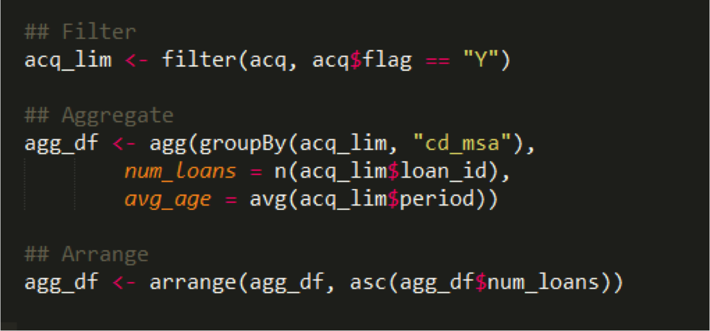
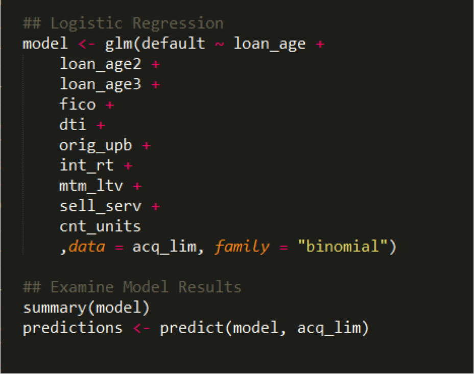

Data Science and Technology
for Public Policy Research
and Governmental Analytics

Me
- Alex, hi.
- Run & Teach in MS-CAPP @ UChicago
- Data Viz for Policy Analysis
- Data Science for Public Policy
- Large Scale Data Methods
- Civic Data Scientist @ Urban Institute
- Twitter: @alexcengler


Overview
- Governmental Analytics
- Machine Learning
- Optimization
- Informing Service Providers
- Government Statistics
- Public Policy Research
- Machine Learning
- Big Data
- Cloud Compute & Scalable Modeling
- Data Visualization
Machine Learning
A modern and effective approach to prediction, referring to both a collection of algorithms and a process.
Learn more: A Visual Introduction to Machine Learning Part I and Part II
Example: Preventing Lead Poisoning
Optimization
Informing Service Providers

Government Statistics
- Blumenstock - Poverty Measures from Cell Phone Metadata
- Billion Prices Index
- Un Global Pulse - Tweets and Food Prices in Indonesia
- Mastercard Spending Pulse
- Organizatinos like BLS and UN-STATS have many concerns:
- Representativeness (e.g. job postings)
- Collection process not meant for statistical purposes
- Loss of Control
It's worth noting that smart cities and urban sensor arrays further enable these tactics.
Onto Policy Research...
Machine Learning, Big Data, and Policy Research
Machine Learning for Variable Generation
UN Global Pulse, the World Bank, and others have shown you can build accurate metrics of poverty from sateliite imagery
Combining Satellite Imagery and Machine Learning to Predict Poverty Measuring Poverty from Nighttime Lighting Measuring Poverty from RoofingExamining Newspaper Bias
Compared phrase frequencies in newspapers to Congressional record to determine slant / bias of the publication.
Found evidence that consumer ideology affects newspaper bias, but could not determine that ownership did.
Full PaperRelated Urban Institute Papers
Big Data and Causal Inference
Gary King, Jennifer Pan & Margaret Roberts - downloaded 3.7 million social media posts in China to evaluate government censorship. They first used descriptive analysis to develop theories, then developed an RCT to test those theories for causality.
The researchers found the Chinese government was not censoring posts due to criticism, but instead used censorship to prevent calls for collective action.
LASSO for Instrumental Variable Selection
LASSO can be used to help select valid instruments, even witout any prior knowledge of which instruments are valid.
Full PaperSpark for Social Science

Spark Social Science

Our Problem
- Big Data
- Small Budget
- Advanced Statistics
- Programming Limitations
'Big Data'
- ~One Billion Rows (Growing to low tens of billions);
- Currently ~1TB of Data;
- Couple Hundred Columns;
- Ideally, this, or even several orders of magnitude higher, should be trivial.
Small Budget
Affordability from Elasticity
Standing Clusters - either in Cloud or on Premise are unaffordable.
Advanced Statistics

Programming Limitations
- Preference for SAS/STATA
- Some R-Users, a few Python-Users
- Java/Scala/C are off the table
Accessibility as a General Concern
- No Linux Command Line;
- No Cloud Expertise;
- No SSH/Telnet Experience;
Our Solution
- Apache Spark
- R/Python with IDEs in Browser
- AWS Elastic MapReduce
Apache Spark
- Distributed Memory Framework for Big Data
- Written in Scala/Java but has R/Python APIs
- Good & Improving Statistical Methods
- Free & Open Source

Relatively Familiar Languages
Development Environments in Browser
- RStudio for R (SparkR)
- Jupyter Notebooks for Python (PySpark)
Reading in Data
Data Manipulation
Statistical Methods
Statistical Functionality
Histogram

Amazon Web Services (AWS) Elastic MapReduce (EMR)
- Elastic - Only Pay for Clusters During Use
- Fast - 10-12 Min Spin Up with Bootstrap
- Free Data Transfer From S3 (AWS Storage)
AWS EMR
Also Cheap:
Four R3.8X Large EC2 Instances:
- 244 GB Memory Each (~1TB Total)
- 32v vCPU Each (128 Total)
- 1300 GB SSD Storage
All for ~$10/Hour
Our Solution (Theory)
Our Solution (Reality)

New Problem - How do Researchers Use This?
- Create AWS Account
- Download PPM Key, Create PPK Key with PuttyGen
- Install AWS Command Line
- Reference Linux Command Line Bootstrap Script
- Install/Use Putty for SSH
- Run FoxyProxy for Portforwarding
Instead: AWS CloudFormation

Instead: AWS Command Line Interface
Data Security & Access
- Working towards FISMA Moderate
- Virtual Private Cloud
- Centrally Controlled Data Access in S3
All Project Outputs are on GitHub
Project Implications - Applied
- Faster iterations of data work;
- Working interactively w/ large admin datasets;
- Non-traditional data sources
- Zillow ZTrax
- Credit Card Data
- Satellite Data
- Internet of Things
Scalable Computation in the Cloud
A Case Study:
Tax Policy Center Model Modernization
The TPC Model
- Only independent (non-governmental) model that can fully simulate the US federal tax system.
- Built on top of the IRS Standards of Income (SOI) Public Use File (PUF) from 2006. Data is rolled forward (with targeted re-weighting) and merged onto CPS data. More detail.
- Then, imagine the calculation that TurboTax is doing, except for 145,858 records.
- Produces revenue and distribution estimates for a ten-year budget window.
Tax Policy Center Model Modernization - Process
- Version-Control with GitHub
- Cloud-deploy on AWS;
- Containerize with Docker;
- Parallelize with R;
Tax Policy Center Model Modernization - Applications
- Incrementing of Policy Changes to Isolate Effects;
- Random draws from parameter distribution (leads to measures of uncertainty);
- Gridsearch methods for optimal tax policy;
Data Visualization

Prison Population Forecaster
NAEP Scores - Details on Demand
Maps!

Immigration and Residential Segregation Funding & Income
Funding over Time
Not all D3.js - We Use R Too
Shiny Applications for Model Results;
Our Approach @ Urban Institute
Check out Data@Urban on Medium